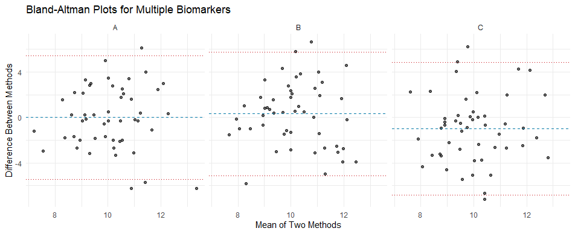

# Load required packages
library(tidyverse)
library(irr) # For ICC calculation
library(knitr) # For table formatting
# Simulating data
set.seed(123)
data <- tibble(
Biomarker = rep(c("A", "B", "C"), each = 50),
Method1 = rnorm(150, mean = 10, sd = 2),
Method2 = rnorm(150, mean = 10, sd = 2)
)
head(data)
#> # A tibble: 6 × 3
#> Biomarker Method1 Method2
#> <chr> <dbl> <dbl>
#> 1 A 8.88 11.6
#> 2 A 9.54 11.5
#> 3 A 13.1 10.7
#> 4 A 10.1 7.98
#> 5 A 10.3 9.76
#> 6 A 13.4 9.44How to create Bland-Altman analysis for multiple biomarkers
Use group_by() for agreement statistics and facet_wrap() for plots
Biostatistics
Data Visualization
R Programming
Bland-Altman analysis is a popular method to assess agreement between two measurement methods. When dealing with multiple biomarkers, it’s essential to analyze each biomarker separately while ensuring the results are both clear and comprehensive. In this post, I’ll show you how to:
- Use
dplyrto calculate the Intraclass Correlation Coefficient (ICC) or Concordance Correlation Coefficient (CCC) with their 95% confidence intervals. - Create faceted Bland-Altman plots with key statistics (bias, limits of agreement) labeled on each panel.
Let’s dive in using a simulated dataset for clarity.
Simulated data example
Calculate ICC for each biomarker
Using dplyr’s group_by() function, we can calculate the ICC for each biomarker and extract 95% confidence intervals.
# Calculate ICC for each biomarker
icc_results <- data %>%
group_by(Biomarker) %>%
summarise(
ICC = round(icc(cbind(Method1, Method2), model = "twoway", type = "agreement")$value, 3),
LowerCI = round(icc(cbind(Method1, Method2), model = "twoway", type = "agreement")$lbound, 3),
UpperCI = round(icc(cbind(Method1, Method2), model = "twoway", type = "agreement")$ubound, 3)
)
# Display ICC results as a formatted table
kable(icc_results)
# saveRDS(kable(icc_results), "blog/dat/icc_results.rds")| Biomarker | ICC | LowerCI | UpperCI |
|---|---|---|---|
| A | -0.125 | -0.396 | 0.162 |
| B | -0.129 | -0.395 | 0.154 |
| C | -0.168 | -0.400 | 0.097 |
Create Bland-Altman plots
We’ll calculate the mean and difference of the two methods for each biomarker, then use facet_wrap() to create individual plots for each biomarker. Key statistics like bias and limits of agreement (LoA) will be annotated on each panel.
# Add Bland-Altman calculations to the data
data <- data %>%
mutate(
Mean = (Method1 + Method2) / 2,
Difference = Method1 - Method2
)
# Bland-Altman plot function
plot_bland_altman <- function(data) {
data %>%
group_by(Biomarker) %>%
summarise(
Bias = mean(Difference),
LoA_Lower = Bias - 1.96 * sd(Difference),
LoA_Upper = Bias + 1.96 * sd(Difference)
) %>%
left_join(data, by = "Biomarker") %>%
ggplot(aes(x = Mean, y = Difference)) +
geom_point(alpha = 0.6) +
geom_hline(aes(yintercept = Bias), color = "#0479A8", linetype = "dashed") +
geom_hline(aes(yintercept = LoA_Lower), color = "#C5050C", linetype = "dotted") +
geom_hline(aes(yintercept = LoA_Upper), color = "#C5050C", linetype = "dotted") +
facet_wrap(~ Biomarker) +
labs(
title = "Bland-Altman Plots for Multiple Biomarkers",
x = "Mean of Two Methods",
y = "Difference Between Methods"
) +
theme_minimal()
}
# Create Bland-Altman plots
plot_bland_altman(data)
Summary
With just a few lines of code, we’ve:
- Calculated the ICC (or CCC) for each marker, complete with confidence intervals.
- Created a clear and concise Bland-Altman plot using
facet_wrap()for each marker.
These steps provide a straightforward way to analyze agreements for multiple biomarkers simultaneously, saving a lot for effort.